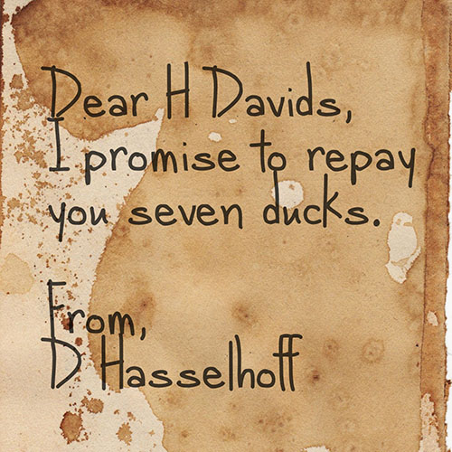
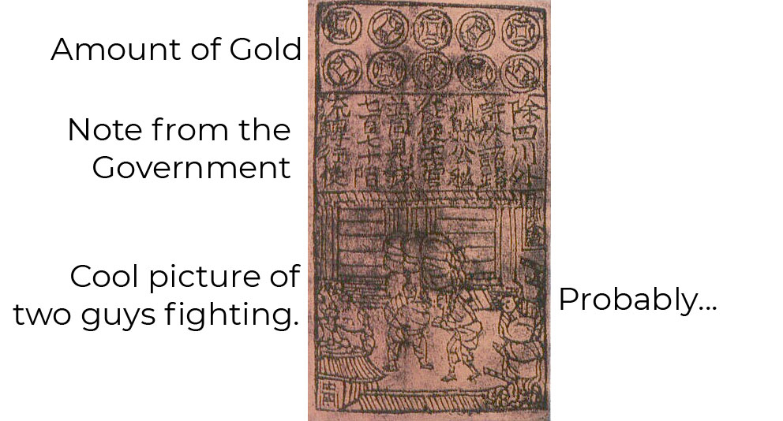

Let's go way back to the very beginning of society. When humans first started out, there weren't very many opportunities for trade. Evidence suggests that early man did a lot of wandering around, and didn't settle into society until fairly recently (on a galactic time-scale anyway). But once humans started to develop societies and grow, trade was possible.
With lots of people in a close enough space, like a village or town, people could learn to specialize in their craft. Potters could improve their pottery, and farmers could improve their agriculture techniques. However pretty quickly, early human societies ran into an issue called the Coincidence of Wants.
Let's say that I make pots, and you grow food. As long as I need food AND you need pots, we have reason to trade. But if you don't need pots anymore, then I am not able to buy any food off you. Wouldn't it be useful if there were a third good that we could use, one where we both agree upon the value?
This is where money comes in. Money is just a third good that doesn't spoil or go out of date, and we all agree has the same value. This makes it a unit of exchange, and a means by which all other goods can be traded.
We often think of gold or silver when it comes to money, but historically, humans have used a lot of weird stuff as money. For a while, we used cows as money. They're somewhat durable, they last for a while, and can be turned into meat or milked. They're also reasonable scarce, an important characteristic of money. Cigarettes are often used as currency in prisons. And when Europeans first found the Americas, alcohol was used as money.
This kind of money is called commodity money because the money itself has a use. To quote Wikipedia:
Commodity money consists of objects that have value in themselves as well as value in their use as money.
A useful attribute of commodity money is that it doesn't require a central authority or government to control it. If civilization in Britain falls apart tomorrow, and the Bank of England collapses, cows will still hold their value. Now, we're not saying that in a post-Brexit world the UK would actually revert to trading in cows rather than pounds. We're just using it as an illustration.
The problem with commodity money is that it limits the potential growth that a society can have. If your society is using cows as a currency, then the amount of money in your society has an upper limit based on the number of cows you can reasonably fit within that society.
Another issue is that commodity money is heavy. The going rate for a Gulfstream G650ER Private Jet is around $66.5 million United States Dollars. If you were to pay for that in gold, you would have to shift 1462KG of the stuff (or 3225lbs). Transactions that size just don't scale very well with commodity money.
A way around this is to give people the ability to exchange their commodity money for an IOU. An IOU (pronounced I owe you) is just a piece of paper with a promise to pay a person an amount of stuff. An IOU doesn't necessarily have to document the repayment of money though.

This method was used in ancient China. The Chinese government was buying a lot of things, and the royal accountants were having a hard time dealing with all the gold coins moving around. So to help matters, they started paying people using pieces of paper with the amount of money owed on them. The holder of the paper could go to the palace and redeem the paper for the amount of gold printed on it.

These papers started being circulated all throughout China. Soon, merchants realized that these slips of paper were always good since they could be returned to the capital for however much was written on them whenever they wanted. So why bother turning them in at all? They could just use the slips of paper to purchase things!
This paper money can be called Fiat currency. The paper that is used is not inherently valuable. It only has value because of the promise from the government to refund it as gold when requested.
This moves us onto the idea of cryptocurrency, which is even less valuable than fiat currency since it has no physical attributes. You can't touch or hold cryptocurrency, you can only ever change its ownership. But unlike fiat currency, cryptocurrency doesn't require a centralized bank or organization to manage the value of the money. Cryptocurrency has both the decentralization of commodity money and the convenience of fiat money.